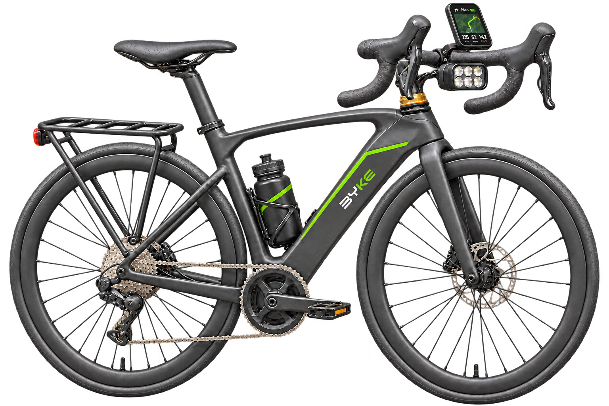
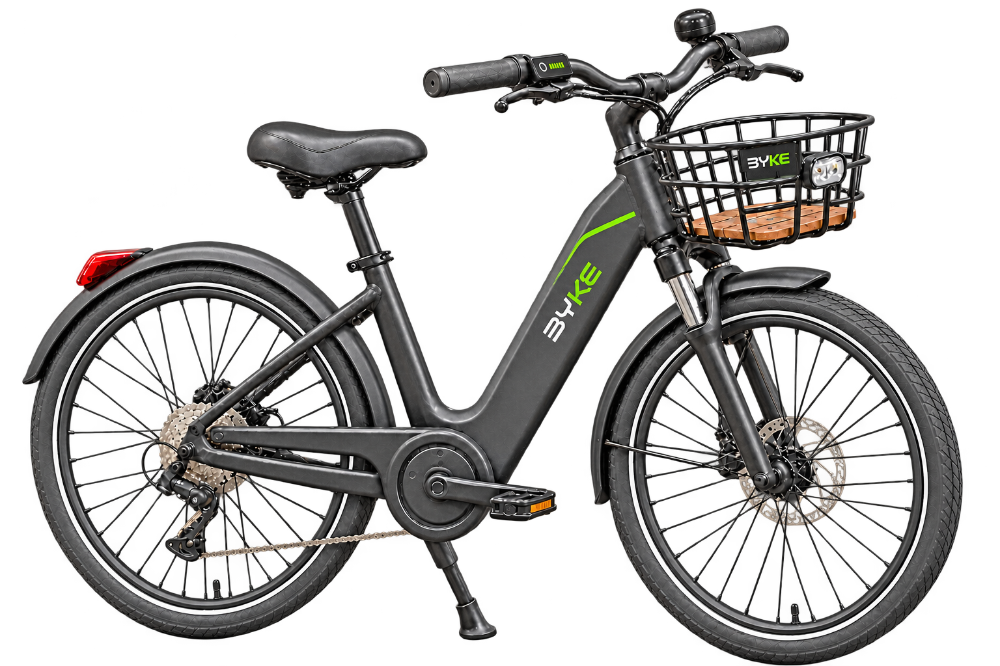
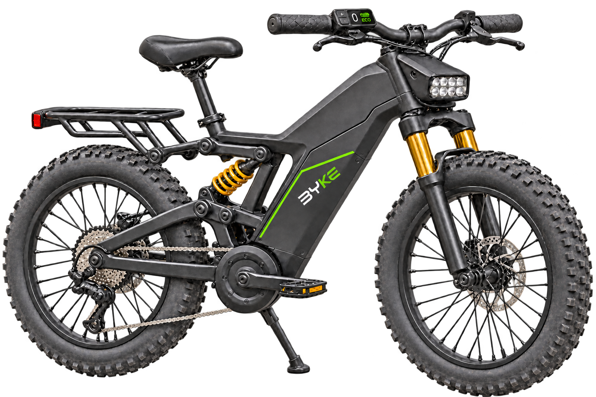

BICICLETAS ELÉTRICAS
Marlim. Tuna. Whale.
Marlim, Tuna e Whale: três personalidades para diferentes caminhos. Conheça a proposta e as características de cada bicicleta.
Explorar modelos ↗
MARLIM · ESPORTIVA
Encontre seu ritmo.
A agilidade do marlin inspira nossa bike de perfil esportivo. Com guidão curvo e pneus de rolagem lisa, a Marlim foi pensada para quem gosta de ganhar ritmo no asfalto.
- Autonomia estimada
- Até 100 km por carga
- Recarga completa estimada
- 4–5 horas
- Pneu e aro propostos
- 700 × 40C · aro 700C
Agilidade · Estilo esportivo · Asfalto

TUNA · URBANA
Energia para acompanhar seu dia.
A Tuna traduz resistência em uma bike feita para a rotina. Sua proposta combina autonomia de bateria, conforto e praticidade. A cesta e o bagageiro acomodam seus pertences, enquanto o quadro baixo facilita cada parada pelo caminho.
- Autonomia estimada
- Até 100 km por carga
- Recarga completa estimada
- 4–6 horas
- Pneu e aro propostos
- 27,5 × 2,15″ · aro 27,5″
Autonomia · Conforto · Praticidade

WHALE · CROSS
Presença para explorar.
A força e a presença da baleia dão personalidade à Whale. Com pneus largos, suspensão dianteira e traseira e visual robusto, ela traz uma proposta aventureira para quem quer explorar caminhos de terra e percursos irregulares.
- Autonomia estimada
- Até 60 km por carga
- Recarga completa estimada
- 5–7 horas
- Pneu e aro propostos
- 26 × 4,0″ · aro 26″
Robustez · Estabilidade · Aventura
LADO A LADO
Compare os modelos.
| Ficha técnica | MarlimEsportiva | TunaUrbana | WhaleCross |
|---|---|---|---|
| Autonomia Estimada por carga | Até 100 km | Até 100 km | Até 60 km |
| Recarga Completa, estimada | 4–5 h | 4–6 h | 5–7 h |
| Pneus e aros | 700 × 40CAro 700C · perfil liso | 27,5 × 2,15″Aro 27,5″ · uso urbano | 26 × 4,0″Aro 26″ · cravos para trilha |
| Controle e conforto | Guidão curvoPegadas variadas durante o pedal | Quadro baixoFacilita subir e descer | Suspensão duplaDianteira e traseira |
| Acessórios | GPSSuporte para garrafa | Cesta dianteiraPara compras e objetos do dia a dia | Bagageiro traseiroPara levar equipamento na trilha |
As medidas dos pneus e aros são propostas para o protótipo.
JÁ ENCONTROU SUA BYKE?
Conheça os planos.
Veja como funciona a assinatura e descubra as modalidades disponíveis.
Conhecer planos ↗